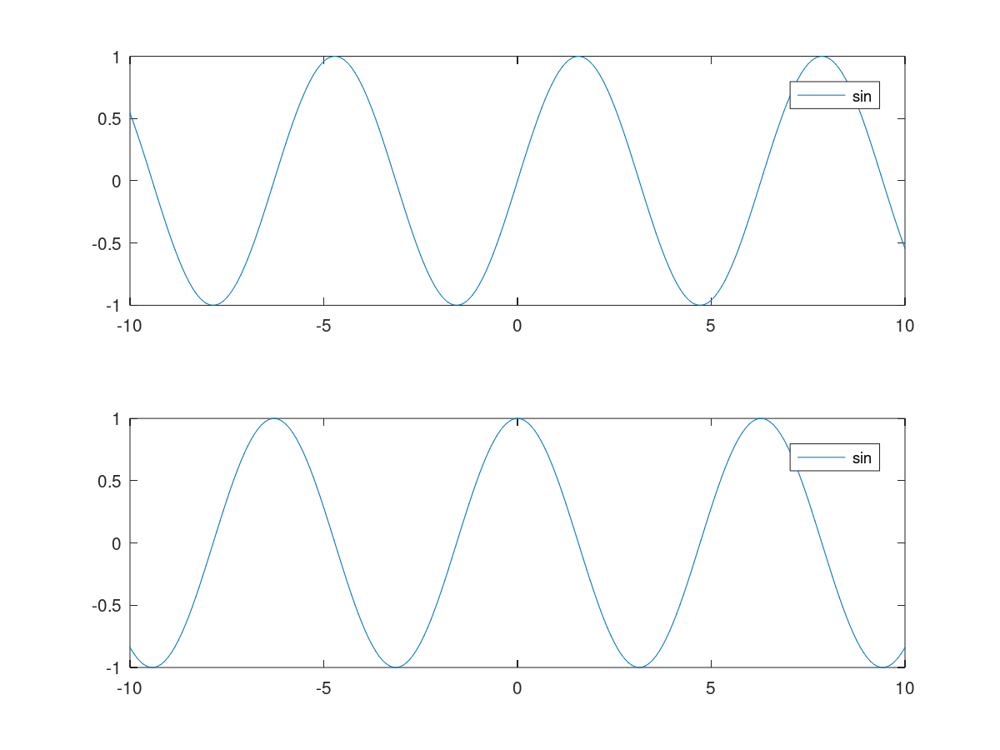

clc clear all #x=linspace(0,pi); subplot (2, 1, 1) fplot(@sin, [-10, 10]) sin (0) function y = sin (x) y = cos (x); endfunction subplot (2, 1, 2) fplot(@sin, [-10, 10]) sin (0) builtin ("sin", 0) #With no arguments, return a structure containing the current autoload map. isa(autoload(),'struct') #octaveMissing
ans = 0 ans = 1 ans = 0 ans = 1